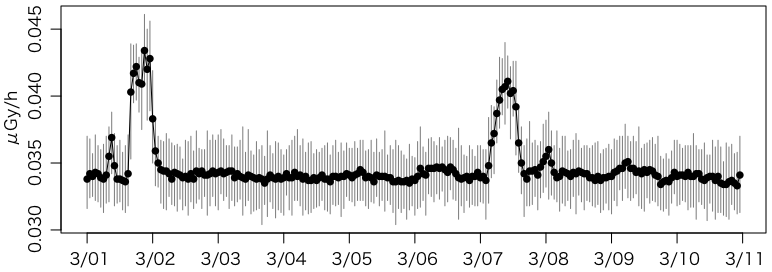

東京都健康安全研究センターの環境放射線測定結果サイトで毎時間の空間放射線の測定値が公開されています。私の放射線関連グラフでもグラフを自動表示しています。
特に，新宿区百人町の健康安全研究センター屋上のモニタリングポスト（地上約18m）では，東日本大震災前から精密な値を測っています。2011年3月以降の値を当サイトの shinjuku.csv というCSVファイルに収めてあります。
まず，環境放射線測定結果 - 大気中の放射線量測定/１時間単位（新宿）[週選択] のページからリンクされているデータ（HTMLファイル）をいただいてきます。
この場合は大量のデータといえるほどのものではありませんが，一般論として，大量のデータをダウンロードする場合には，配慮が必要です。例えばウィキペディアのウェブスクレイピングをご覧ください。偽計業務妨害容疑で逮捕され20日間勾留された有名な岡崎市立中央図書館事件（いわゆるLibrahack事件）の例もあります（これは図書館側に問題があったのですが）。
例えば2013年の全データ（第1週〜第52週）は http://monitoring.tokyo-eiken.go.jp/report/shinjuku/ の中の mon_air_week_2013XXw.html（XX = 01〜52）というファイルに収められています。これらを一括でダウンロードするには，UNIX系OS（Linux，Macなど）では，例えば次のようなコマンドで行います（Macではwgetをインストールしておくか，元々入っているcurlを使うように手直しします）。
for x in `seq 1 52` do wget `printf "http://monitoring.tokyo-eiken.go.jp/report/shinjuku/mon_air_week_2013%02dw.html" $x` sleep 1 done
もちろんこれくらいであれば1行で
for x in `seq 1 52`; do wget `printf "http://monitoring.tokyo-eiken.go.jp/report/shinjuku/mon_air_week_2013%02dw.html" $x`; sleep 1; done
と打ってしまう人が多いかもしれません。
「配慮」として，ここでは一つダウンロードするごとに sleep 1 で1秒待っています。某図書館のような問題を抱えたサイトでは，もっと待つ必要があるかもしれません。
中を見ると，実際のデータは次のような形で入っています。日時と，μGy/h単位の線量率の最大値・最小値・平均値です。Gy（グレイ）はほぼSv（シーベルト）と同程度の単位です（厳密には違います）。
<th>2014/02/09 23:01～24:00</th> <td>0.0358</td> <td>0.0314</td> <td>0.0334</td>
無駄にインデントされていたり改行が入っていたりしますが，気にしないことにします。これを読んでCSVに出力するには，Rubyなら例えば次のようにできます。
#! /usr/bin/ruby
# -*- coding: utf-8 -*-
buf = ARGF.read
while buf =~ %r{<th>([\d/]+)\s*([\d:]+)[^<]*</th>\s*<td>([\d.]+)</td>\s*<td>([\d.]+)</td>\s*<td>([\d.]+)</td>}m
print "#{$1} #{$2},#{$3},#{$4},#{$5}\n"
buf = $' # 前回のマッチの直後から始める
end
これで ./hoge.rb * >x.csv のように出力し，sort x.csv >shinjuku.csv のように並べ替え，頭に datetime,max,min,avg のような列名を付ければ，完成です。
<td>([\d.]+)</td> を <td>(.*?)</td>
としたところ，最大値・最小値が空で，平均値に「点検中」「停電中」のような文字列が入っているところも拾いました。それはそれでいいのですが，そもそも日時も入っていない欠測値もあるので，欠測値は無視する方向でまとめました。
<th>([\d/]+)\s*([\d:]+)[^<]*</th>
を <th>([\d/]+)\s*([\d:]+).*?</th>
にしたところ，.*? が最初の </th>
の前で止まるかと思ったらそういうわけではなく，さらにその次の条件も満たす </th>
までマッチしてしまい，間違った結果を出してしまいました。最小量指定子 .*?
は必ずしも「ネストしていない括弧の対応を取るため」に使えない例です（参考：正規表現）。
なお，こんな簡単な場合はかえって煩わしいかもしれませんが，より一般的な方法として，Ruby の Nokogiri を使えば，次のようにできます。この例では，最新のデータを収めたURLから直接読み込んでいます。
#! /usr/bin/ruby
# -*- coding: utf-8 -*-
require 'open-uri'
require 'nokogiri'
url = 'http://monitoring.tokyo-eiken.go.jp/mp_shinjuku_air_data.html'
charset = nil
html = open(url) do |f|
charset = f.charset
f.read
end
doc = Nokogiri::HTML.parse(html, nil, charset)
doc.xpath('//tbody/tr').each do |tr|
if tr.css('th').text =~ %r{\A([\d/]+)\s*([\d:]+)}
print "#{$1} #{$2}"
tr.xpath('td').each do |td|
print ",#{td.text}"
end
puts
end
end
欠測の詳細は環境放射線測定結果 - 新着情報に載っていますが，一番長いのは 2013/07/23 から 2013/07/25 のもので，次のように書かれています：
新宿モニタリングポストを設置している建物の解体工事に伴い、モニタリングポストをこれまで設置していた建物の屋上（地上約18ｍ）から隣の建物の屋上（地上約22m）に移設します。
そのため、平成25年7月23日（火曜日）10時から25日（木曜日）17時まで測定を停止します。
なお、当センター敷地内の工事完了後には、モニタリングポストを地上に移設する予定です。
Rで読んで解析するには，ここでは data.table と，そこで説明した fasttime を使うことにします。
library(data.table)
library(fasttime)
shinjuku = fread("http://oku.edu.mie-u.ac.jp/~okumura/stat/data/shinjuku.csv")
shinjuku$datetime = fastPOSIXct(shinjuku$datetime) - 9*3600
s = subset(shinjuku, datetime < as.POSIXct("2011/03/11"))
par(mgp=c(2,0.8,0)) # 好み
plot(range(s$datetime), range(c(s$min,s$max)),
type="n", xaxt="n", xlab="", ylab="μGy/h")
r = as.POSIXct(round(range(s$datetime), "days"))
axis.POSIXct(1, at=seq(r[1],r[2],by="day"), format="%b/%d")
segments(s$datetime, s$min, s$datetime, s$max, col=gray(0.5))
points(s$datetime, s$avg, type="o", pch=16, col="black")

ついでに 2013/07/23 の移設前の10日間もプロットしてみましょう。
s = shinjuku[datetime %between% c(as.POSIXct("2013/07/13"),as.POSIXct("2013/07/23"))]
plot 以下は同じです。
事故前より 0.01μGy/h 程度大きいところで推移しています。
さらに移設後の10日間です。
s = shinjuku[datetime %between% c(as.POSIXct("2013/07/26"),as.POSIXct("2013/08/05"))]
plot 以下は同じです。
あれ，事故前のレベルに戻ってしまいました。移設作業で除染されたのかな？
XMLパッケージの readHTMLTable() を使えばもっと簡単にできると教えていただきました（R から HTML の表を読み込む - 廿TT）。
library(XML)shinjuku = readHTMLTable("http://monitoring.tokyo-eiken.go.jp/mp_shinjuku_air_data.html")head(shinjuku[[1]])V1 V2 V3 V4 1 2015/02/12 \r\n07:01～08:00 0.0364 0.0326 0.0346 2 2015/02/12 \r\n06:01～07:00 0.0366 0.0323 0.0344 3 2015/02/12 \r\n05:01～06:00 0.0367 0.0327 0.0342 4 2015/02/12 \r\n04:01～05:00 0.0364 0.0317 0.0340 5 2015/02/12 \r\n03:01～04:00 0.0360 0.0306 0.0338 6 2015/02/12 \r\n02:01～03:00 0.0354 0.0323 0.0340
ヘッダは，セル結合を使っているためか，うまく取得できません。日時は途中で改行 \r\n が入っています。再パースが必要ですが，かなり楽そうです。
Hadley Wickhamが rvest というWebスクレーピング用パッケージを作っています。
library(rvest)x = read_html("http://monitoring.tokyo-eiken.go.jp/mp_shinjuku_air_data.html")t = html_table(x, header=FALSE, fill=TRUE)head(t[[1]][-1:-2,])X1 X2 X3 X4 3 2015/12/30 \r\n20:01～21:00 0.0321 0.0285 0.0306 4 2015/12/30 \r\n19:01～20:00 0.0324 0.0292 0.0307 5 2015/12/30 \r\n18:01～19:00 0.0332 0.0286 0.0305 6 2015/12/30 \r\n17:01～18:00 0.0328 0.0292 0.0306 7 2015/12/30 \r\n16:01～17:00 0.0325 0.0291 0.0309 8 2015/12/30 \r\n15:01～16:00 0.0329 0.0293 0.0308
ちなみにrvest（アー（ル）ヴェスト）はharvest（収穫する＝scrapeする）の語呂合わせと思われます。